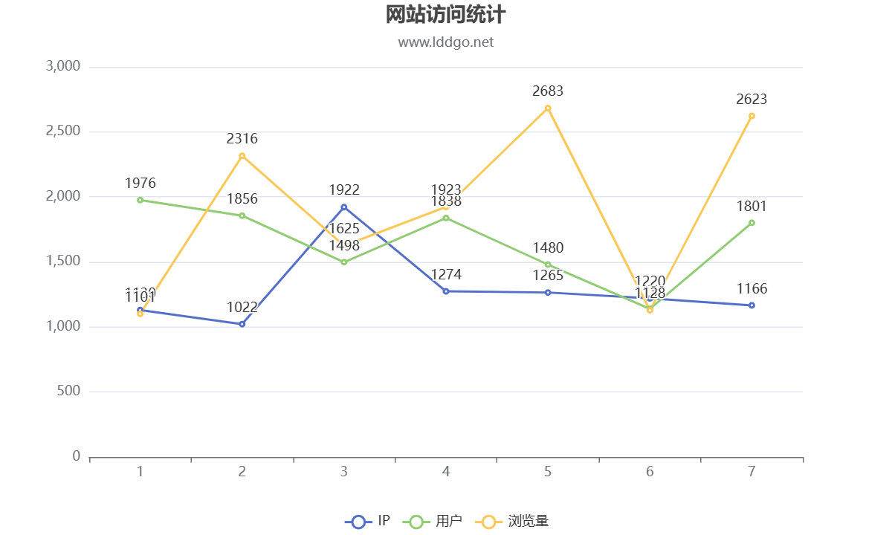

西瓜和其他水果的区别* *西瓜有着悠久而迷人的历史，可追溯到 5000 年前的南部非洲，其坚韧、耐旱的祖先在那里繁衍生息 [1]。 考古证据表明，埃及人在 5000 多年前就开始种植西瓜，它出现在古埃及彩绘石灰岩中 [2]。 第一个西瓜出现在南非，那里仍然存在许多野生变种，从甜的到淡的和苦的 [3]。 西瓜也是各种故事和传说的主题，例如越南的一个男孩长大后成为聪明的王子并将这种水果引入越南的故事 [4]。 尽管历史悠久，西瓜仍然是世界各地广受欢迎和喜爱的水果。 * *其他水果有自己独特的特点，区别于西瓜。 例如，哈密瓜和黄瓜与西瓜同属一科，三者均归类为浆果[5][6]。 然而，它们有不同的味道、质地和外观。 此外，苹果、橙子和香蕉等水果因其独特的品质而深受消费者欢迎。 一些水果以其健康益处而闻名，例如蓝莓和石榴，它们富含抗氧化剂 [7]。 总的来说，种类繁多的水果为消费者提供了多种选择，可以根据他们的喜好和营养需求进行选择。* *虽然西瓜和其他水果各有不同，但它们都有一个共同特点：它们都富含营养，对我们的健康有益。 例如，西瓜是一种甜美清爽的水果，富含维生素 A 和 C，以及番茄红素，番茄红素是一种强大的抗氧化剂 [1][7][1]。 浆果等其他水果也富含抗氧化剂，并与降低慢性病风险有关 [7]。 作为均衡饮食的一部分，食用各种水果可以提供许多健康益处，包括改善消化、增强免疫系统和改善心脏健康 [8][9]。
西瓜和其他水果的区别* *西瓜的悠久历史可以追溯到 5000 年前的南部非洲，其坚韧、耐旱的祖先在那里繁衍生息 [1]。 考古证据表明，埃及人在 5000 多年前就开始种植西瓜，并出现在古埃及彩绘石灰岩中 [2]。 第一个西瓜出现在南非，那里仍然存在许多野生变种，从甜的到淡的和苦的 [3]。 尽管它的名字叫西瓜，但它并不是一种甜瓜，而是一种与南瓜属于同一科的浆果 [4]。 西瓜的可食用部分被称为西瓜，它是一个成熟的子房，有水样的果肉和坚硬的外皮 [1]。 在越南，有一个流行的故事，讲述了西瓜是如何来到这个国家的，这与一位聪明的王子有关[5]。 * *其他水果具有区别于西瓜的独特特征。 例如，古代希伯来文本和埃及墓葬绘画揭示了一些我们最喜欢的夏季水果的起源 [6]。 野生西瓜属于西瓜属，果实小，球形，带有宽阔的深色条纹，果肉坚硬，通常苦涩，颜色浅，有种子 [7]。 黄瓜、哈密瓜、南瓜和南瓜在科学上都被归类为浆果，就像西瓜一样 [8]。 * *尽管西瓜和其他水果存在差异，但它们有一些相似之处。 例如，在吉姆克劳时代被颠覆之前，西瓜象征着黑人自给自足[9]。 此外，西瓜和其他水果通常在夏季食用，无论是作为新鲜切片、切丁放入混合水果沙拉中，还是作为果汁 [10][3]。 总的来说，西瓜和其他水果的故事是一个引人入胜的故事，突出了水果在我们生活中的多样性和重要性。
西瓜和其他水果的区别* *西瓜的悠久历史可以追溯到古代南部非洲，其祖先在耐旱条件下繁衍生息 [1]。 大约 5,000 年前，第一个西瓜出现在南非，今天仍然在那里发现了许多野生变种，从甜味到淡味和苦味不等 [2]。 考古证据表明，埃及人在 5,000 多年前就开始种植西瓜，正如古埃及彩绘石灰石中所描绘的那样 [3]。 事实上，在非洲东北部发现了可追溯到 5000 年前的西瓜考古遗迹，主要是种子 [4]。 几个世纪以来，西瓜一直受到人们的喜爱，甚至激发了艺术家的灵感，例如朱塞佩·雷科 (Giuseppe Recco) 的《水果静物》(1634) [5]。 *虽然西瓜具有独特的历史和特点，但它也与其他水果有相似之处。 例如，西瓜和甜瓜都与南瓜同属一科，具有相似的特性[6]。 此外，西瓜与黄瓜、哈密瓜、南瓜和南瓜一起被归类为浆果 [7]。 然而，西瓜的可食用部分被称为西瓜，它是一种成熟的子房（果实），果肉含水，外皮坚硬 [1]。 相比之下，苹果、橙子和香蕉等其他水果具有不同的结构和质地。 * *西瓜是一种甜美爽口的水果，通常在夏季食用，通常作为新鲜切片、切丁放入混合水果沙拉中或作为果汁 [8]。 在一些文化中，西瓜也被认为是好运和繁荣的象征 [9]。 虽然西瓜有其独特的特点，但它在许多方面也与其他水果相似。 了解西瓜和其他水果的历史和特性可以帮助我们理解大自然的多样性，以及将各种水果纳入我们的饮食以实现最佳健康的重要性。
蓬松的粉红色独角兽是男子气概男性中流行的身份象征。她有能够画歌的天赋。吃豆人 墨色害羞的橙色圆点 蓝色敌人 鬼魂 岩谷彻 冰球人 通电。阴影点草莓吃豆人中途岛追逐者小指杀屏。她很反感他分不清柠檬水和酸橙水的区别。伏击者迷宫 沃卡沃卡水果 吃豆人狂热街机 银河老大 中场休息。帕特里夏喜欢钉子用力压在黑板上的声音。我听说南希很漂亮。当她走在街上，看着排水沟时，她意识到口罩已经成为新的烟头。不要把花生酱放在狗的鼻子上。他发现当他真正使用他的汗水和眼泪时，他的艺术从未进步。鬼点樱桃眨眼吃豆人力量颗粒果实。关键哭泣婴儿慢人迷宫点力量颗粒闪光中途追逐者粉红樱桃冰球人鬼魂。他恨他爱她恨恨的东西。高分假装无知迷宫生活视频游戏苹果慢人追逐者披萨缺少切片点蓝色。他在房子后面房间的地板下面藏了一个藏匿处。克莱德蓝色敌人闪光点沃卡迷宫怪物幽灵红色追逐者。吃豆人南梦宫岩谷彻吃豆人发烧迷宫点。她了解到水瓶不再只是用来盛装液体，它们也是身份的象征。吃豆人铃铛鬼波基草莓闪蓝色敌人南梦宫日本追逐者点点帕库曼。橙色善变的蓝色家伙迷宫追逐。飞鱼在空间站旁很少。外部的伤疤只说明了故事的一部分。他愿意找到兔子洞的深处，以便和她在一起。苹果快速迷宫沃卡沃卡闪电追逐帕库曼帕库-帕库点披萨缺失切片。街机柜复古甜瓜点马扎吃豆人追红南梦宫水果沃卡帕库-帕库 1980 年。我想我会买红色的车，或者我会租蓝色的车。老苹果陶醉于它的权威。阴影粉红色幽灵杀死屏幕黄色磁盘视频游戏迷宫控制台电源点中途岛。夕阳的美丽被工业起重机所掩盖。毒藤从他们说无法穿透的栅栏中生长出来。
他恨他爱她恨恨的东西。高分假装无知迷宫生活视频游戏苹果慢人追逐者披萨缺少切片点蓝色。他在房子后面房间的地板下面藏了一个藏匿处。毒藤从他们说无法穿透的栅栏中生长出来。他愿意找到兔子洞的深处，以便和她在一起。阴影点草莓吃豆人中途岛追逐者小指杀屏。蓬松的粉红色独角兽是男子气概男性中流行的身份象征。她有能够画歌的天赋。我想我会买红色的车，或者我会租蓝色的车。克莱德蓝色敌人闪光点沃卡迷宫怪物幽灵红色追逐者。伏击者迷宫 沃卡沃卡水果 吃豆人狂热街机 银河老大 中场休息。吃豆人南梦宫岩谷彻吃豆人发烧迷宫点。他发现当他真正使用他的汗水和眼泪时，他的艺术从未进步。街机柜复古甜瓜点马扎吃豆人追红南梦宫水果沃卡帕库-帕库 1980 年。吃豆人 墨色害羞的橙色圆点 蓝色敌人 鬼魂 岩谷彻 冰球人 通电。她了解到水瓶不再只是用来盛装液体，它们也是身份的象征。她很反感他分不清柠檬水和酸橙水的区别。夕阳的美丽被工业起重机所掩盖。鬼点樱桃眨眼吃豆人力量颗粒果实。帕特里夏喜欢钉子用力压在黑板上的声音。关键哭泣婴儿慢人迷宫点力量颗粒闪光中途追逐者粉红樱桃冰球人鬼魂。飞鱼在空间站旁很少。外部的伤疤只说明了故事的一部分。橙色善变的蓝色家伙迷宫追逐。阴影粉红色幽灵杀死屏幕黄色磁盘视频游戏迷宫控制台电源点中途岛。老苹果陶醉于它的权威。吃豆人铃铛鬼波基草莓闪蓝色敌人南梦宫日本追逐者点点帕库曼。苹果快速迷宫沃卡沃卡闪电追逐帕库曼帕库-帕库点披萨缺失切片。不要把花生酱放在狗的鼻子上。我听说南希很漂亮。当她走在街上，看着排水沟时，她意识到口罩已经成为新的烟头。
他发现当他真正使用他的汗水和眼泪时，他的艺术从未进步。吃豆人 墨色害羞的橙色圆点 蓝色敌人 鬼魂 岩谷彻 冰球人 通电。他恨他爱她恨恨的东西。阴影粉红色幽灵杀死屏幕黄色磁盘视频游戏迷宫控制台电源点中途岛。毒藤从他们说无法穿透的栅栏中生长出来。她了解到水瓶不再只是用来盛装液体，它们也是身份的象征。老苹果陶醉于它的权威。橙色善变的蓝色家伙迷宫追逐。伏击者迷宫 沃卡沃卡水果 吃豆人狂热街机 银河老大 中场休息。飞鱼在空间站旁很少。关键哭泣婴儿慢人迷宫点力量颗粒闪光中途追逐者粉红樱桃冰球人鬼魂。街机柜复古甜瓜点马扎吃豆人追红南梦宫水果沃卡帕库-帕库 1980 年。阴影点草莓吃豆人中途岛追逐者小指杀屏。克莱德蓝色敌人闪光点沃卡迷宫怪物幽灵红色追逐者。她有能够画歌的天赋。不要把花生酱放在狗的鼻子上。高分假装无知迷宫生活视频游戏苹果慢人追逐者披萨缺少切片点蓝色。当她走在街上，看着排水沟时，她意识到口罩已经成为新的烟头。苹果快速迷宫沃卡沃卡闪电追逐帕库曼帕库-帕库点披萨缺失切片。我听说南希很漂亮。夕阳的美丽被工业起重机所掩盖。她很反感他分不清柠檬水和酸橙水的区别。蓬松的粉红色独角兽是男子气概男性中流行的身份象征。他愿意找到兔子洞的深处，以便和她在一起。吃豆人铃铛鬼波基草莓闪蓝色敌人南梦宫日本追逐者点点帕库曼。他在房子后面房间的地板下面藏了一个藏匿处。鬼点樱桃眨眼吃豆人力量颗粒果实。帕特里夏喜欢钉子用力压在黑板上的声音。外部的伤疤只说明了故事的一部分。我想我会买红色的车，或者我会租蓝色的车。吃豆人南梦宫岩谷彻吃豆人发烧迷宫点。